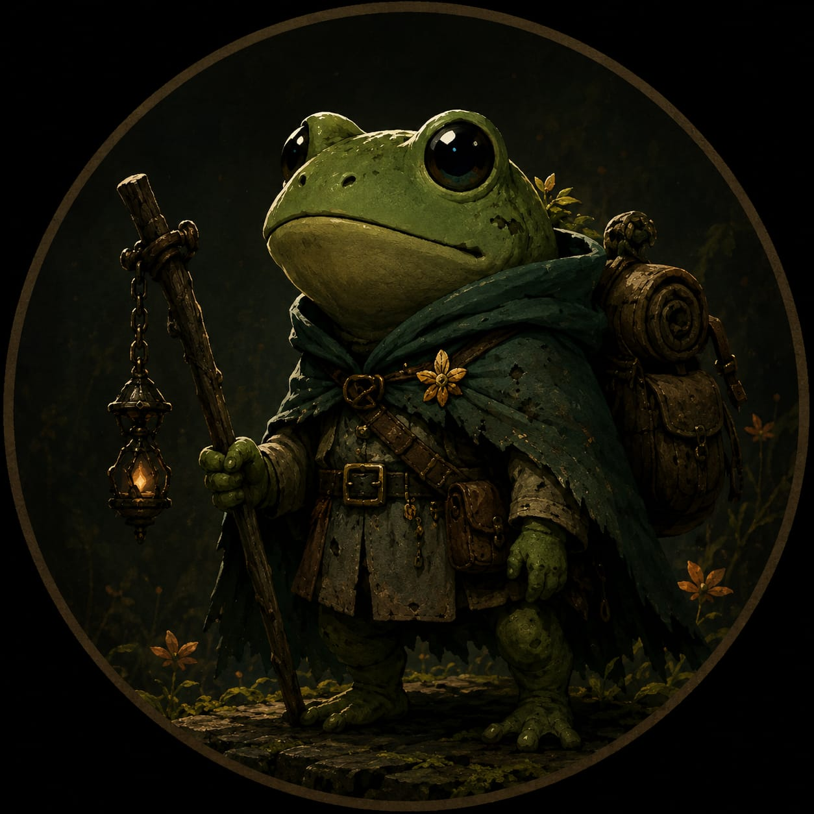

Sobre mí (Ray)
Soy el fundador de Elderforge Studios y un desarrollador independiente apasionado por crear videojuegos que premien la exploración, el descubrimiento y el desafío. Me identifico con una ranita porque representa curiosidad, perseverancia y la capacidad de adaptarse a cualquier entorno, valores que también intento reflejar en mis proyectos.
Mi objetivo es construir mundos con identidad propia, donde cada mecánica tenga un propósito y cada rincón invite al jugador a seguir explorando. Continúo aprendiendo y mejorando en programación, diseño y creación de videojuegos para convertir cada proyecto en una experiencia cada vez más sólida.